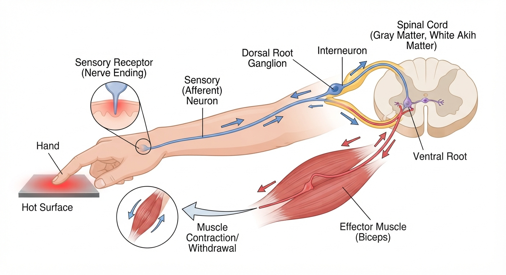

The 5 Parts of a Reflex Arc
Visual Map: 5 Components of a Nerve Pathway
1 · Sensory Receptor
Select a component from the left list to see details.
Reflex Loop Reference

A typical reflex arc consists of: (1) receptor, (2) sensory neuron, (3) interneuron (in polysynaptic paths), (4) motor neuron, and (5) effector muscle.
Reflex Impulse Simulator
Knee Tap Reflex (Stretch Reflex)
Tap the tendon spot or click "Trigger Reflex" below to hammer the patellar tendon and watch the nerve impulse travel up the sensory path, synapse in the spinal cord, and return to contract the quadriceps.
🔨
Clinical Diagnostic Exam Station
KNEE REFLEX TESTING STATION
CHOOSE DIAGNOSIS